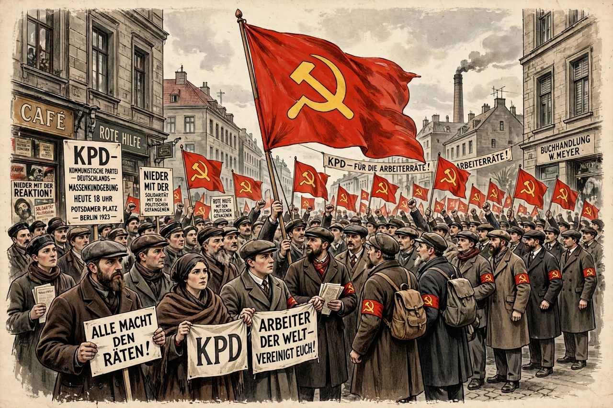

From Wikipedia, the free encyclopedia
| Communist Party of Germany | |
|---|---|
 Kommunistische Partei Deutschlands (KPD) | |
| Founded | 30 December 1918 – 1 January 1919 |
| Banned | 1933 (Nazi Germany); 1956 (Federal Republic) |
| Key figures | Rosa Luxemburg, Karl Liebknecht, Ernst Thälmann |
| Ideology | Communism; Marxism–Leninism |
| Paramilitary wing | Roter Frontkämpferbund |
The Communist Party of Germany (German: Kommunistische Partei Deutschlands, KPD) was a major political party in Germany between 1918 and 1933, and a minor party in West Germany in the postwar period until it was banned in 1956. Founded by Rosa Luxemburg and Karl Liebknecht out of the Spartacus League, it was the German section of the Communist International (Comintern) and, under Ernst Thälmann, the largest communist party outside the Soviet Union.
The KPD was founded at a congress in Berlin over New Year 1918–19, days before the Spartacist uprising, in which Luxemburg and Liebknecht were murdered by Freikorps troops on 15 January 1919. After absorbing the left wing of the Independent Social Democrats in 1920 it became a mass party. Its failed insurrections — the March Action of 1921 and the "German October" of 1923 in Hamburg — ended its revolutionary bid for power in the republic's early years.
Under Ernst Thälmann (chairman from 1925) the party was "Bolshevised," aligned closely with Stalin's Comintern. From 1928 the Comintern's "Third Period" line branded the SPD "social fascists" and the main enemy, fatally dividing the left as the Nazis rose. KPD votes nonetheless grew in the Depression: 4.6 million (14.3%) in September 1930 and nearly 6 million (16.9%) in November 1932, making it the third party in the Reichstag. Its paramilitary Roter Frontkämpferbund fought street battles with the Nazi SA and sometimes, tactically, alongside the Nazis against the SPD-led Prussian government.
The KPD was the first party crushed after the Reichstag fire: under the Reichstag Fire Decree its functionaries were arrested en masse, Thälmann was imprisoned (and murdered at Buchenwald in 1944), and its deputies were excluded from the Kroll Opera House vote on the Enabling Act. Tens of thousands of communists passed through concentration camps; the party maintained a clandestine resistance and an exile leadership in Moscow, many of whose members perished in Stalin's purges.
In the Soviet occupation zone the KPD was merged with the SPD in 1946 into the Socialist Unity Party (SED), which ruled East Germany until 1989. In the West the KPD won 5.7% in the first Bundestag election of 1949 but declined and was banned by the Federal Constitutional Court in 1956 as unconstitutional; a successor, the German Communist Party (DKP), was founded in 1968.